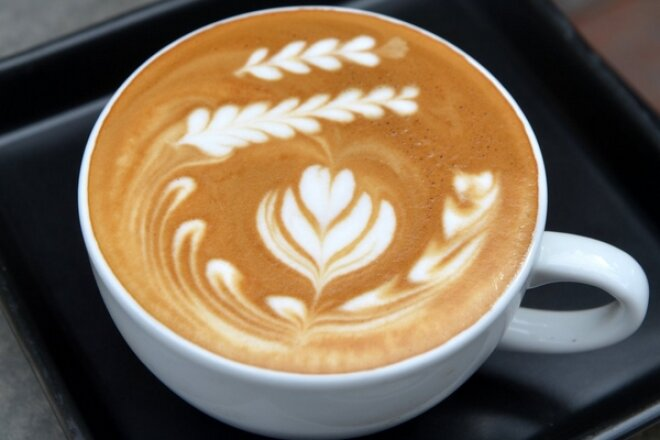

Визначення
Лате — кавовий напій родом з Італії, що складається з молока і кави еспресо.
Проготування
В Італії лате готують у домашніх умовах і подають на сніданок. Для приготування лате використовують мокко й чашка підігрітого молока.
За межами Італії лате зазвичай готують із порції еспресо, яку
заливають гарячим спіненим молоком (t = 60–70° С).
Співвідношення еспресо, молока та молочної піни в такого напою 1:2:1
відповідно.
Сервування
- У низці закладів лате подають у скляному келиху на серветці.
- Часто лате прикрашають різноманітними малюнками зі спіненого молока.